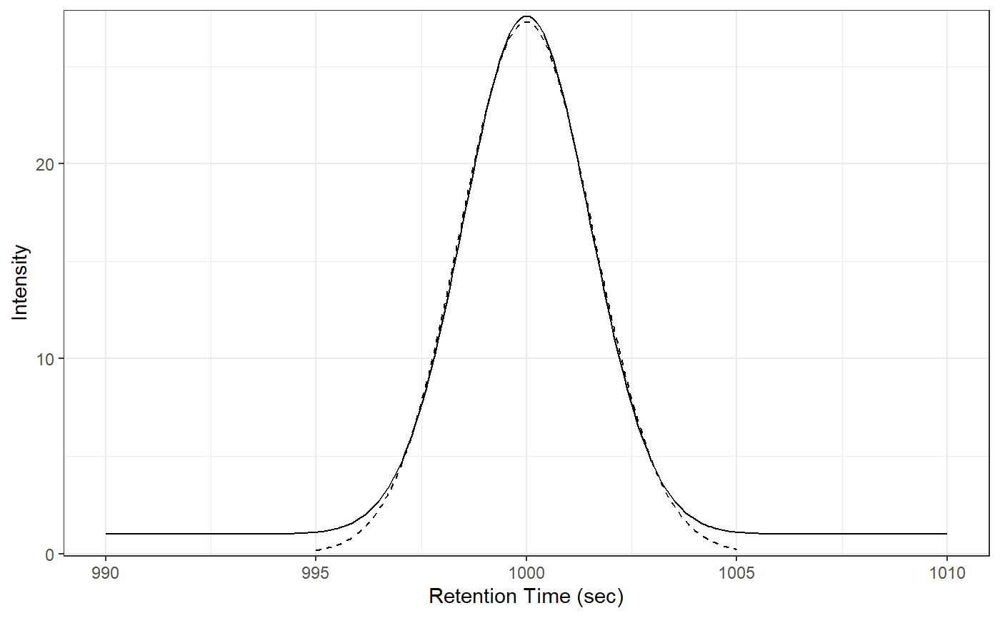
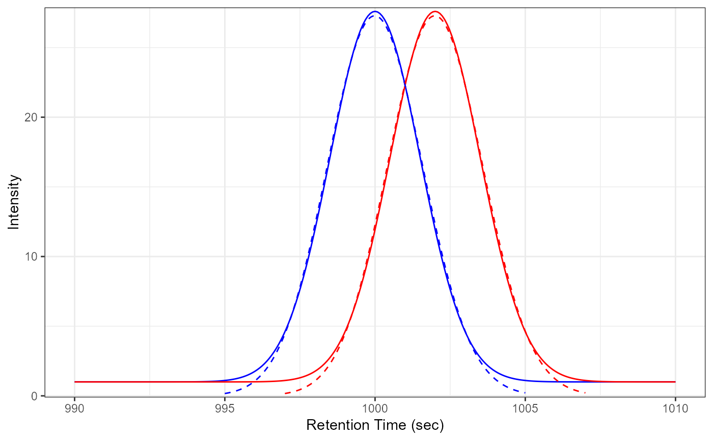

R/peakPantheR_plotEICFit.R
peakPantheR_plotEICFit.Rdplot a ROI across multiple samples (x axis is RT, y axis is intensity). If curveFit is provided, the fitted curve for each sample is added.
peakPantheR_plotEICFit(ROIDataPointSampleList, curveFitSampleList = NULL, rtMin = NULL, rtMax = NULL, sampling = 250, sampleColour = NULL, verbose = TRUE)
| ROIDataPointSampleList | (list) list of |
|---|---|
| curveFitSampleList | (list) NULL or a list of
|
| rtMin | (float) NULL or vector of detected peak minimum retention time (in sec) |
| rtMax | (float) NULL or vector ofdetected peak maximum retention time (in sec) |
| sampling | (int) Number of points to employ when plotting fittedCurve |
| sampleColour | (str) NULL or vector colour for each sample (same length
as |
| verbose | (bool) if TRUE message when NA scans are removed |
Grob (ggplot object)
## Input data # fake sample 1 # ROI data points rt1 <- seq(990, 1010, by=20/250) mz1 <- rep(522., length(rt1)) int1 <- (dnorm(rt1, mean=1000, sd=1.5) * 100) + 1 tmp_DataPoints1 <- data.frame(rt=rt1, mz=mz1, int=int1) # fittedCurve fit1 <- list(amplitude=37.068916502809756, center=999.3734222573454, sigma=0.58493182568124724, gamma=0.090582029276037035, fitStatus=2, curveModel='skewedGaussian') class(fit1) <- 'peakPantheR_curveFit' # fake sample 2 # ROI data points rt2 <- seq(990, 1010, by=20/250) mz2 <- rep(522., length(rt2)) int2 <- (dnorm(rt2, mean=1002, sd=1.5) * 100) + 1 tmp_DataPoints2 <- data.frame(rt=rt2, mz=mz2, int=int2) # fittedCurve fit2 <- list(amplitude=37.073067416755556, center=1001.3736564832565, sigma=0.58496485738212201, gamma=0.090553713725151905, fitStatus=2, curveModel='skewedGaussian') class(fit2) <- 'peakPantheR_curveFit' ## Plot features in 1 sample without colours peakPantheR_plotEICFit(ROIDataPointSampleList=list(tmp_DataPoints1), curveFitSampleList=list(fit1), rtMin=995., rtMax=1005., sampling=250, sampleColour=NULL, verbose=FALSE)## Plot features in 2 samples with colours peakPantheR_plotEICFit( ROIDataPointSampleList=list(tmp_DataPoints1,tmp_DataPoints2), curveFitSampleList=list(fit1, fit2), rtMin=c(995., 997.), rtMax=c(1005.,1007.), sampling=250, sampleColour=c('blue', 'red'), verbose=FALSE)